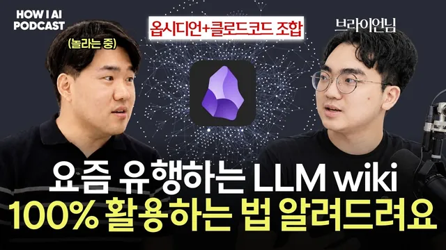

LLM wiki랑 RAG랑 뭐가 다른건지 알려드려요. 옵시디언+클로드 코드 조합은 필수입니다. (브레인 트리니티 브라이언님)

원본 영상 보기 →
- RAG와 LLM 위키는 업데이트와 정제에서 갈려요
- AI가 정리를 잘하려면 왜 담았는지가 함께 들어가야 해요
- 온톨로지는 그래프가 아니라 문서로 시작할 수 있어요
한 줄 요약
조쉬가 브레인 트리니티 채널의 브라이언 님을 초대해 LLM 위키(LLM Wiki)가 RAG와 무엇이 다른지 묻고 옵시디언(Obsidian)과 클로드로 하루를 통째로 기록하는 시스템을 화면으로 직접 본 대담이에요. 도구보다 먼저 내가 누구이고 왜 이걸 모으는지를 AI에게 알려 주는 일이 핵심이라는 이야기입니다.
전체 내용 정리
기록이 쌓일수록 AI가 나를 알고 답하기 시작해요
브라이언 님은 낮에는 큰 조직의 AI 도입과 사업 전략을 돕는 AX 컨설턴트로 일하고 저녁에는 유튜브 채널 '브레인 트리니티'를 운영해요. 주로 다루는 주제는 개인 지식 관리예요. 시작은 단순했다고 합니다. 세상에 남는 게 기록밖에 없다는 생각에 자기 방식대로 기록을 파 왔는데, 알고 보니 인터넷에서는 그걸 세컨드 브레인(Second Brain)이라고 부르고 있었다는 거죠.
왜 기록이 중요하냐는 조쉬의 질문에 브라이언 님은 이렇게 답해요. AI에게 물으면 답은 잘 나오지만 나를 알고 답하는 것과 그냥 답하는 건 다르다는 거예요. 내 기록이 있는 상태에서 물으면 AI가 내가 어떤 맥락에서 묻는지 알아채고 더 센스 있게 답해 준다고 합니다.
지식을 따로 관리하는 이유도 물었어요. 브라이언 님은 "세상에서 제일 가치 있는 거는 나의 지식이라고 생각합니다"라고 말해요. 콘텐츠를 보다가 나중에 써먹어야겠다고 가치를 느낀 그 순간에 저장해 두면 실제로 꺼내 쓸 수 있거든요. 그래서 기록을 시간 여행에 빗대요. "전 기록이라는게 약간 시간을 여행하는 기분이라고 생각이 들거든요."
조쉬는 자신이 수집형은 아니고 그때그때 떠오른 인사이트를 가끔 적어 두는 정도라며 그래도 괜찮은지 물었어요. 답은 괜찮다였어요. "이게 모든 분들이 이렇게 기록을 다 해야 되고 다 관리를 할 필요는 없어요." 브라이언 님이 말하는 관리란 필요할 때 잘 꺼내 쓰도록 리트리벌(retrieval, 다시 찾고 검색하는 일)을 효율적으로 만드는 정도예요. 휴대폰 메모나 카카오톡 '나에게 보내기'에 흩어져 있어도 필요할 때 꺼낼 수 있으면 충분하다고 봅니다.
LLM 위키는 카파시의 포스트 하나에서 시작됐어요
LLM 위키라는 말은 안드레 카파시(Andrej Karpathy)가 올린 포스트 하나에서 퍼졌어요. 'LLM 널리지 베이스(LLM Knowledge Base)'라는 이름으로 AI와 지식 노동을 더 잘 협업하려면 무엇이 필요한지 적은 글이었죠. 요약하면 이래요. 유튜브 영상이나 PDF 같은 자료를 AI가 잘 쓰도록 인제스트(ingest, 소화시키기)하고, 그걸 보는 프런트엔드로 옵시디언을 쓰고, 질의응답으로 꺼내 결과물을 내보내고, 린팅(linting)으로 깔끔하게 정리하자는 내용이었어요.
흥미로운 건 브라이언 님의 평가예요. 솔직히 LLM 위키 자체는 엄청 대단한 게 아니라고 봐요. 그런데도 폭발적으로 뜬 이유를 타이밍에서 찾습니다. LLM 위키가 4월에 나오기 전부터 오픈클로(OpenClaw)나 헤르메스(Hermes) 같은 도구로 텔레그램에서 24시간 나를 아는 에이전트를 만들려는 흐름이 있었어요. 그런데 나를 아는 에이전트를 만들려면 그 밑에 지식 기반이 필요하잖아요. AI가 똑똑해지는 흐름과 AI가 읽기 좋은 형태로 지식을 정리하는 흐름, 이 두 축이 만나 터졌다는 게 브라이언 님의 해석이에요.
개념은 간단해요. 위키 하면 나무위키나 위키백과처럼 누구나 함께 편집하는 공유 지식 베이스가 떠오르죠. LLM 위키는 사람이 LLM과 함께 편집하고 접근하는 지식 베이스예요. 내가 모은 원본 자료와 링크를 넣고 인제스트를 시키면 AI가 읽고 찾기 좋은 마크다운 문서로 저장하고 인덱싱해요. 그리고 필요할 때 꺼내 재활용하는 구조입니다.
조쉬가 인제스트란 원본 파일을 마크다운으로 바꾸는 작업이냐고 묻자 브라이언 님은 "변환 작업뿐만 아니라 연결이라고 보시면 될 거 같아요"라고 답해요. 인제스트를 거치면 위키에 인덱스, 곧 목차가 생겨요. 문서를 하나 넣을 때마다 AI가 그 안의 개념(concept)을 뽑아 서로 연결하고 나중에 질문하면 그 연결을 타고 타고 가서 지식을 더 효율적으로 가져온다고 해요.
다만 갖고 있는 자료를 전부 쏟아 넣는 용도는 아니라고 선을 그어요. 내가 가치 있게 여겨 나중에 LLM과 함께 써먹고 싶은 문서를 넣어야 하고 내가 누구이고 어떤 목적으로 넣는지도 함께 들어가야 AI가 의도대로 정리해 준대요. 나와 관련 없는 자료를 막 넣으면 원하는 방향으로 정리되지 않는다고 합니다.
RAG는 매번 비용이 들고 LLM 위키는 새 문서만 얹으면 돼요
조쉬는 구독자들이 가장 궁금해할 질문으로 RAG(검색 증강 생성)와의 차이를 꺼냈어요. 브라이언 님이 먼저 든 건 업데이트 방식이에요. RAG는 새 문서가 들어오면 업데이트하느라 매번 비용이 생기는데, LLM 위키는 새로 들어온 문서만 업데이트하면 된다고 해요. "전체를 다시 인덱싱을 할 필요가 없는 겁니다."
두 번째는 문서가 정제돼 있다는 점이에요. LLM 위키는 문서가 들어올 때부터 인제스트를 거쳐 엔티티(entity)와 개념으로 분해되고 연결돼요. 처음부터 AI가 쓰기 좋게 정돈된 문서라서 검색할 때도 사람이 생각하는 맥락에 가깝게 시맨틱(semantic)하게 꺼낼 수 있다는 거죠. 반면 RAG는 원본 문서가 애초에 정리돼 있지 않으면 그런 맥락이 잘 잡히지 않는다고 봐요.
저장 형태도 달라요. RAG는 데이터를 청킹(chunking)하고 임베딩해서 벡터 DB에 숫자로 넣죠. LLM 위키는 사람이 읽을 수 있는 마크다운 문서로 들어가요. 그래서 브라이언 님은 LLM 위키가 오히려 사람에게도 더 좋다고 말해요. LLM과 같이 쓰는 위키니까 사람도 같이 보고 편집할 수 있어야 하거든요. 개인에게만 맞는 방식이냐는 질문에는 기업에도 훨씬 낫다고 답했어요. 문서를 정리하는 단계부터 AI에 맞춘 형태로 인제스트하는 게 포인트라서 기업이 AI를 활용할 때도 유리하다는 입장입니다.
그렇다면 노션이나 옵시디언에 폴더와 스키마를 공들여 짜 놓고도 결국 안 쓰게 되는, 이른바 지식의 무덤은 왜 생길까요. 브라이언 님은 첫째로 목적이 없어서라고 봐요. 개인 지식 관리나 세컨드 브레인이 유행할 때도 많은 사람이 이걸 어디에 쓸지 고민하지 않고 일단 쌓기 시작했다가 실패했다는 거죠.
둘째는 구조예요. 구조화는 원래 어려워요. 컴퓨터 공학에서 온톨로지(ontology)가 데이터의 일관성을 위해 필요하듯, 내 데이터를 일관되게 정리하려면 머릿속에 체계가 있어야 해요. 그런데 한국 교육 과정에서 나 자신을 그렇게 구조적으로 고민해 볼 기회는 많지 않았다는 게 브라이언 님의 진단이에요.
하루를 의도, 실행, 현실, AI 로그로 나눠 남겨요
조쉬는 브라이언 님이 하루를 의도, 실행, 현실, 해석, AI 로그의 다섯 갈래로 기록한다고 들었다며 화면을 청했어요. 브라이언 님이 연 건 옵시디언 데일리 노트였어요.
의도는 아침에 쓰는 플래너예요. 오늘 내 시간을 어디에 쓸지 먼저 적는데, 직접 쓰기도 하고 이동 중에 휴대폰으로 헤르메스 에이전트와 대화하며 채우기도 해요. 이날의 포커스는 회사의 AI 교육과 저녁의 조쉬 팟캐스트 출연이었다고 합니다. 플래너가 비어 있으면 에이전트가 주간 계획, 할 일 목록, 캘린더를 보고 질문을 던지거나 계획을 추천해 줘요.
브라이언 님은 이게 생산성을 높인다고 봐요. 생산성은 결국 실행 속도인데, 다음에 뭘 할지 선택지가 많을 때 내 할 일과 일정을 바탕으로 추천을 받으면 빨라진다는 거예요. 추천이 틀릴 수도 있어요. 그래도 AI와 대화하며 내가 검증하고 승인한 계획이라는 점이 다르다고 해요. 하루가 계획대로 돌아간다는 보장은 없어도 생각하고 진행하는 하루와 계획 없이 흘러가는 하루는 다르다는 거죠.
실행은 실제로 한 일의 기록이에요. 브라이언 님은 목걸이형 녹음기를 차고 다니며 휴대폰과 연동해 충전기에 넣기 전까지 24시간 녹음해요. 자기 목소리가 들어가는 게 트리거가 되고 2분 동안 녹음이 없으면 그 구간을 하나의 이벤트로 분리해 요약한 뒤 트랜스크립트 원본과 함께 옵시디언에 저장된대요. 다른 사람과 함께하는 회의는 플라우드 노트(Plaud Note)로 따로 녹음하고요. 손으로 남기는 기록도 있어요. 길에서 좋은 영상을 보면 헤르메스로 남기고 18시 40분에 스타벅스에서 리뷰를 했다는 식으로 타임스탬프를 직접 찍어 두기도 해요.
AI 로그는 자동으로 쌓여요. 브라이언 님은 클로드에 로그 스킬을 만들어 두고 대화가 끝나면 그동안 무엇을 했는지 요약해 데일리 노트에 타임스탬프로 남겨요. 클로드가 옵시디언 볼트를 바라보도록 연결해 둔 덕분이에요. 프로젝트에서도 /log로 기록해 두면 새 세션을 열었을 때 로그만 불러와 어디서 끝났고 어디서 시작할지 정리하게 할 수 있어요. 조쉬는 이걸 중간 세이브 포인트라고 부르며 클로드와의 대화를 따로 로그로 남길 생각은 한 번도 못 해 봤다고 감탄했어요. 7월 13일 노트에는 브라이언 님이 인상 깊게 본 TED 강연의 핵심을 AI가 알아서 정리해 넣은 기록도 있었어요.
현실은 실행과 겹치지만 범위가 더 넓어요. 브라이언 님은 컴퓨터 화면도 24시간 녹화해요. 스크린파이프(Screenpipe)라는 앱으로 내가 진짜로 뭘 했는지 전부 남기고 로컬 모델이 30분 간격으로 그 내용을 요약해요. 새 맥북으로 바꾼 뒤로는 컴퓨터 음성까지 녹음한다고 하고요. 실행이 내가 의식적으로 한 행동이라면 현실은 말로 표현되지 않은 부분, 했는지조차 잊어버릴 부분까지 데이터로 남긴 거예요. 스스로를 "기록 변태"라고 부를 정도죠.
이 앱들이 MCP를 지원해서 녹음기, 플라우드, 스크린파이프의 데이터가 마이 데이터라는 곳에 라이프 로깅으로 모여요. 이 데이터는 AI 로그와 회고에 쓰여요. 브라이언 님이 가장 좋다고 꼽은 건 모든 시간으로 다시 돌아가 볼 수 있다는 점이었어요.
인제스트 스킬은 정리 전에 왜 담았는지부터 물어요
브라이언 님은 옵시디언 볼트를 두 개 써요. 하나는 깊게 숙지할 생각은 없지만 나중에 써먹으려고 가볍게 담아 두는 LLM 위키예요. 다른 하나는 직접 메모하고 필기하며 깊게 이해하려는 볼트고요.
가볍게 담을 땐 옵시디언 웹 클리퍼(Obsidian Web Clipper)를 써요. 노션 클리퍼와 비슷한데 용도별로 템플릿을 만들 수 있다는 게 장점이에요. 유튜브용 템플릿으로 클리핑하면 전체 트랜스크립트까지 가져와 LLM 위키의 raw 폴더에 저장돼요. 그다음 노트 위치를 복사해 인제스트해 달라고 하면 인제스트 스킬이 돌아가요.
폴더는 두 갈래예요. raw에는 원본 자료가, wiki에는 그 원본을 쪼개 엔티티와 개념으로 나누고 인덱싱한 결과가 들어가요. 소스 정리 노트, 엔티티 노트, 개념 노트가 만들어지고 서로 연결되죠. 여기서 브라이언 님만의 차이가 나와요. 다른 사람들이 만든 인제스트 스킬은 대개 알아서 정리하는데, 브라이언 님의 스킬은 먼저 이 영상을 왜 캡처했는지 물어요.
시연에서는 BCG의 AI 전략을 다룬 영상을 넣으면서 이렇게 답했어요. 자신은 AX 업무를 하는데 컨설팅 펌의 접근이 재밌었고 기술 도입이 끝이 아니라 기업이 어떻게 비즈니스를 할지를 다루는 엔터프라이즈 IQ라는 개념이 흥미로웠다고요. 이 지식을 나중에 어떻게 써먹고 싶은지까지 적게 한대요. 그러면 AI가 개념을 인식해 노트를 네다섯 개 만들어요. 브라이언 님은 그 영상에서 AI 도입을 어댑션(adoption)이 아니라 디플로이(deploy)로 표현하고, 비즈니스를 다시 설계한다는 뜻으로 리셰이프(reshape)라는 용어를 쓰더라는 이야기도 덧붙였어요. 점심때 본 영상을 그날 바로 위키에 넣은 거예요. 조쉬는 이걸 "재료 손질"이라고 표현했어요.
브라이언 님은 이 질문이 가장 중요하다고 봐요. 뭔가를 캡처할 땐 이유가 있기 마련이고 어느 부분에서 그렇게 생각했는지와 어떤 부분을 써먹을지를 꺼내 놓는 과정을 "무의식의 의식화"라고 불러요. 조쉬도 그냥 로우한 데이터가 아니라 내 생각이 담긴 데이터라 가치가 없을 수 없다고 맞장구쳤어요. 이렇게 엔티티를 뽑아 두면 나중에 BCG가 나오는 다른 영상을 담았을 때 BCG 노트에 자동으로 연결돼요.
조쉬는 팔란티어(Palantir)의 온톨로지가 떠오른다고 했어요. 브라이언 님은 온톨로지와 지식 그래프를 구분해요. 온톨로지는 일관성을 위한 질서이자 체계이고 그게 실제 내 버전으로 구현된 게 지식 그래프라는 거예요. 커피로 치면 원두와 바리스타 같은 틀이 온톨로지이고 스타벅스의 어떤 원두와 어떤 직원처럼 인스턴스로 채워진 게 지식 그래프예요.
그리고 온톨로지는 그래프로 그려 두기보다 문서로 표현해야 한다고 강조해요. 실제로 브라이언 님은 자기 데이터를 넣어 세계관, 인생의 방향성, 지식 아키텍처를 AI에게 문서로 정리하게 했고 위키는 이 문서를 기준으로 정리되고 연결돼요. 조쉬가 클론을 만들어도 되겠다고 하자 브라이언 님은 실제로 자기 클론을 만들어 자녀들에게 물려주려 한다고 답했어요.
새벽 2시의 AI 회고가 1년을 한 편의 이야기로 엮어 줬어요
회고는 매일 새벽 2시에 AI가 하루치 데이터를 바탕으로 진행해요. 브라이언 님이 자기 전에 STT로 일기를 남기는 날도 있는데, 그러면 그 압축된 생각까지 반영돼요. AI는 어떤 데이터를 활용했는지 밝히고 오늘 한 일과 오늘의 원씽(One Thing)을 정리하며 추천도 덧붙여요. 이게 주간, 월간, 분기, 연간 회고로 이어져요.
브라이언 님은 계획 세우기와 회고를 10년쯤 해 왔고 연말에는 인생 회고와 계획을 세우는 프로그램도 운영해요. 그런데 정작 직접 할 시간이 부족해 AI와 함께 회고를 해 봤더니 놀라운 경험을 했대요. 1월과 2월 기록을 하나씩 모아 달라고 한 뒤 분기별로 스토리를 짜 달라고 했더니, 머릿속에 남아 있던 1년의 흐름이 그대로 나왔다는 거예요. 우리의 기억은 디테일이 아니라 서사로 남는데 AI가 그 서사를 그대로 그려 줬다는 거죠.
개인적인 일화도 꺼냈어요. 2023년 말 지금의 아내를 만났을 때 만날 때마다 감정이 격해져서 그 과정을 다 기록해 뒀다고 해요. GPT-4 터보 시절 이 기록들을 연결해 스토리를 써 달라고 했더니, 머릿속에서 느낀 서사 그대로 사랑 이야기가 나왔대요. 그 글은 실제로 쓰였고요. 이때 기록을 AI와 함께 쓰면 엄청난 일이 가능하다는 걸 느꼈고 2026년 1~2월 오픈클로가 커지면서 더 적극적으로 기록하게 됐다고 합니다.
그럼 처음 시작하는 사람은 무엇부터 해야 할까요. 브라이언 님은 이렇게까지 할 필요는 없다는 말부터 해요. 시작점은 내 맥락을 쌓는 것이에요. 기존 기록을 모두 모아 가장 비싼 모델에 읽히고 내가 무엇을 하는 사람이고 무엇에 가치를 느끼는지 풀어 문서로 만들어 달라고 하는 게 첫 단계래요. 틀이 필요하면 이나모리 가즈오의 '왜 일하는가'나 사이먼 사이넥의 '스타트 위드 와이(Start with Why)'를 기준으로 과거 기록을 정리해 봐도 좋다고 했어요. 그다음 이 문서를 바탕으로 어떤 지식을 모아 무엇에 쓸지 정하면 돼요. 브라이언 님에게는 유튜브와 강의 콘텐츠 제작, 본업인 AX 교육과 컨설팅이 그 목적이에요.
왜 그렇게 나다움과 기록에 집착하냐는 조쉬의 질문에는 시간이 가장 희소하고 가치 있는 자원이라서라고 답했어요. 팟캐스트를 찍기 시작한 지 한 시간 반이 지났는데 그 사이에도 생각은 달라질 수 있고 "그거를 기록해 놓는게 그냥 세이브 포인트를 해 놓는 거 같아요."
앞으로의 계획도 밝혔어요. 지금은 텔레그램에서 메인 에이전트인 '브레인'과 금융, 생각 기록, 회고를 맡은 에이전트들과 소통해요. 다음에는 디스코드에 채널을 만들어 멘토라고 여기는 사람들의 관점을 심은 에이전트들이 어벤져스처럼 협업하며 조언해 주는 형태를 목표로 한대요. 조쉬는 2부와 라이브를 예고하며 대담을 마무리했어요.
핵심 인사이트
- RAG와 LLM 위키는 업데이트와 정제에서 갈려요: 브라이언 님에 따르면 RAG는 새 문서가 들어올 때마다 비용이 들고 LLM 위키는 새 문서만 얹으면 돼요. 인제스트 단계에서 엔티티와 개념으로 쪼개고 연결해 두니 사람도 읽을 수 있는 정돈된 문서가 남고요. 어떤 방식을 고를지 판단할 때 쓸 만한 기준입니다.
- AI가 정리를 잘하려면 왜 담았는지가 함께 들어가야 해요: 같은 영상이라도 내가 누구이고 어떤 목적으로 담았는지 알려 줘야 의도대로 정리돼요. 브라이언 님은 이 과정을 무의식의 의식화라고 부르고 목적 없이 쌓는 것을 지식의 무덤이 생기는 첫째 원인으로 꼽아요.
- 온톨로지는 그래프가 아니라 문서로 시작할 수 있어요: 세계관, 인생의 방향성, 지식 아키텍처를 문서로 적어 두면 그게 위키를 정리하는 질서가 돼요. 거창한 구조 설계 없이도 일관성을 만들 수 있어서 개인에게 현실적인 방법이에요.
- 기록은 세이브 포인트예요: 로그 스킬로 대화와 프로젝트의 중간 지점을 남기면 새 세션에서도 바로 이어서 일할 수 있어요. 쌓인 기록은 회고 단계에서 1년의 서사로 되살아나기도 하고요.
오늘 당장 해볼 것
- 휴대폰 메모, 카카오톡 '나에게 보내기', 노션에 흩어진 기록을 한곳에 모아 가장 성능 좋은 모델에 넣고 내가 어떤 사람이고 무엇에 가치를 느끼는지 문서로 정리해 달라고 요청해 보세요. 브라이언 님이 꼽은 첫 단계이고 이후 모든 정리의 기준 문서가 돼요.
- 클로드 코드에 대화 요약을 남기는 로그 스킬을 하나 만들어 보세요. 작업이 끝날 때마다 무엇을 했는지 타임스탬프와 함께 옵시디언 데일리 노트나 프로젝트 폴더에 저장하게 하면, 다음 세션에서 그 로그만 불러와도 어디서 이어 갈지 바로 잡혀요.
- 옵시디언 웹 클리퍼에 유튜브용 템플릿을 만들고 영상을 담을 때 왜 담았는지와 나중에 어디에 쓸지를 두세 줄 같이 적어 보세요. 인제스트할 때 이 메모가 들어가야 AI가 내 목적에 맞게 개념을 쪼개고 연결해 줘요.